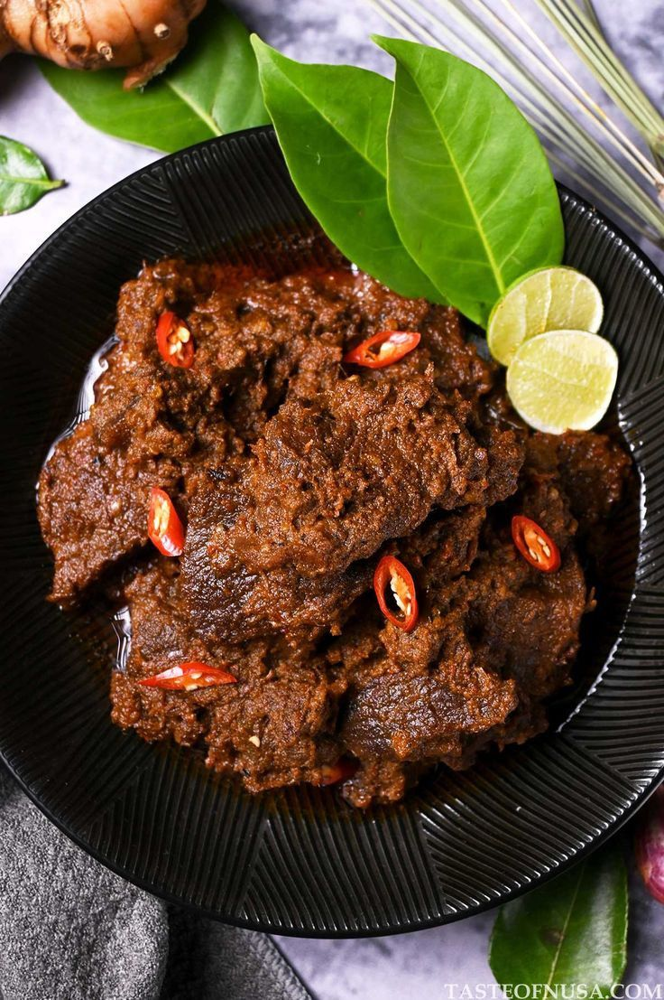
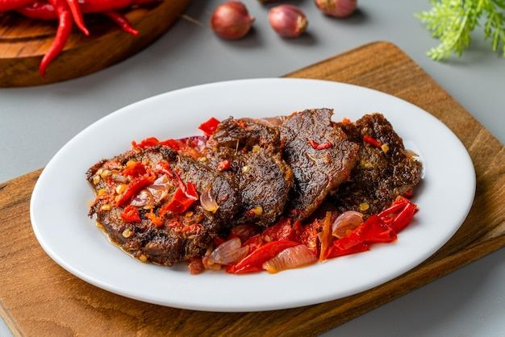

Ayam Pop
Ayam yang dimasak dengan bumbu sederhana hingga menghasilkan tekstur yang lembut dan rasa gurih. Biasanya disajikan bersama sambal merah khas masakan Padang.
Lihat Resep
Rendang
Daging sapi yang dimasak perlahan dengan santan dan beragam rempah hingga empuk. Rasanya gurih, kaya bumbu, dan memiliki aroma rempah yang khas.
Lihat Resep
Dendeng Balado
Irisan tipis daging spai yang dimasak hingga kering dan renyah, kemudian siram dengan sambal balado. Perpaduan rasa gurih, pedas, dan sedikit asam membuatnya semakib nikmat.
Lihat Resep